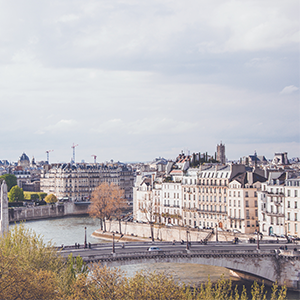
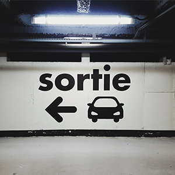
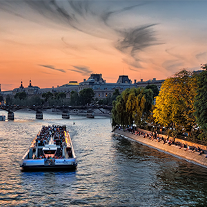
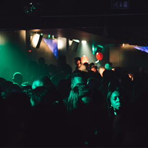
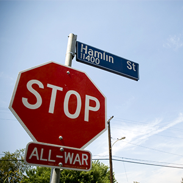
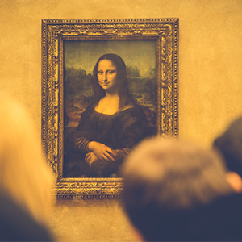
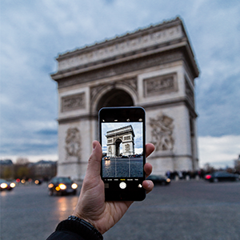
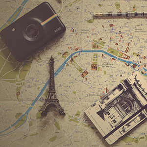
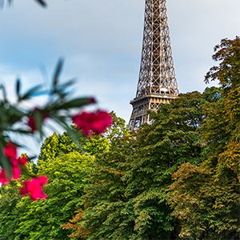

THE CITY OF PARIS
THE CITY OF PARIS
THE CITY OF PARIS
THE CITY OF PARIS
THE CITY OF PARIS
THE CITY OF PARIS
THE CITY OF PARIS
THE CITY OF PARIS
THE CITY OF PARIS
Things you need to know
BEFORE VISITING
AVOID AUGUST!
Stay close to the river for optimum city access

Take the Metro
Learn at least a little of the language

Take a boat ride on the Seine

Eat iconically
Dance at a club!

Step up your clothing, but don’t worry too much

Be Amazed by
FUN FACTS





